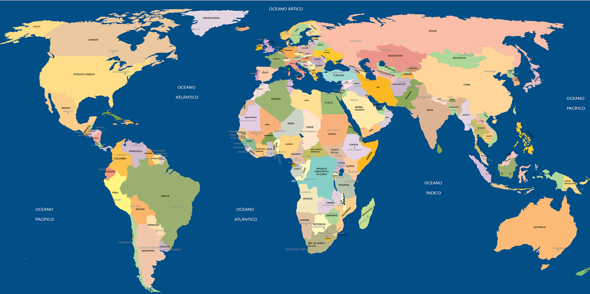

Monitoramento em Tempo Real
Dados atualizados da Carta Internacional Space and Major Disasters para suporte em desastres naturais.

Obs.: Este mapa simula a visualização de áreas de risco e alertas baseados em dados reais de satélite e sensores IoT.
Para informações em tempo real e dados de satélite oficiais, consulte a Carta Internacional Space and Major Disasters.